Inspirations · 59 voyages
Voyages au Vietnam, à votre rythme
Circuits privés et petits groupes, au Vietnam, au Laos et au Cambodge.
- 01
Vos envies
Dates, rythme, ce qui vous intéresse : dites-nous tout.
- 02
Votre itinéraire
Un conseiller francophone vous propose un programme, ajusté avec vous.
- 03
Votre voyage
Vous partez l’esprit libre, nous restons à vos côtés.

Notre coup de cœur
Vietnam en profondeur : du Grand Nord au Mékong
Hanoï · Hà Giang · Cao Bằng · Ba Bể · Ninh Bình · Lan Hạ · Huế · Hội An · Saigon · Bến Tre
Tous nos voyages
Choisir son voyage
Filtrer
59 voyages
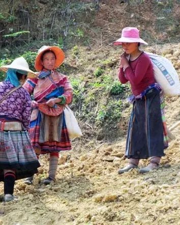
Circuit privé21jours Sapa et le Nord · Est sauvage, Hanoi et baie d'Halong, les patrimoines Hue · Hoi An, Sai Gon et le delta du Mékong. Aventure du Vietnam Découvrir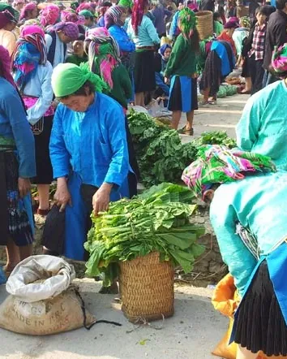
Circuit privé21jours Hanoi · Ha Giang · Dong Van · Bao Lac … Grande traversée du dragon Découvrir Circuit privé20jours Nord Ouest sauvage · Hanoi · Halong et réserve de Van Long · Centre historique et royal de Hue et Hoi An … Charme du Dragon Découvrir Petit groupe19jours
Ha Giang · Cao Bang · Ba Be · Ninh Binh …
Vietnam en profondeur : du Grand Nord au Mékong
Découvrir
Petit groupe19jours
Ha Giang · Cao Bang · Ba Be · Ninh Binh …
Vietnam en profondeur : du Grand Nord au Mékong
Découvrir
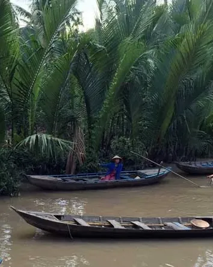
Circuit privé19jours Sapa et ses marchés ethniques · Hanoi et la baie d'Halong · Réserve de Van Long · Centre historique et royal … Des sommets du Nord jusqu’au Mékong Découvrir Circuit privé18jours Hanoi · Puluong · Van Long · Halong … Vietnam - Terre de charme Découvrir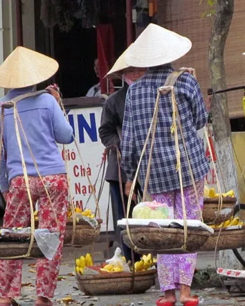
Circuit privé17jours Hanoi · Mai Chau · Hoa Lu · Dong Hoi … Vietnam passionnément DécouvrirSur mesure
Votre voyage n’est pas dans la liste ? Créons-le ensemble.
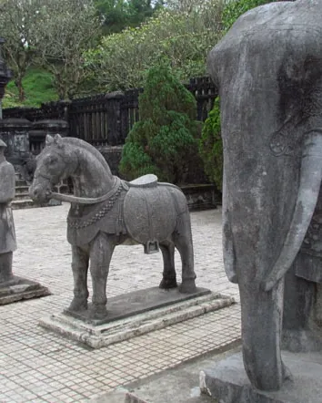
Circuit privé16jours Hanoi · Van Long · Ha Long · Phong Nha … Le Long du Côte du Tonkin et de l’Annam Découvrir Circuit privé16jours Hanoi · Mai Chau · Van Long · Halong … Les incontournables du Vietnam et Plage de Hoi An Découvrir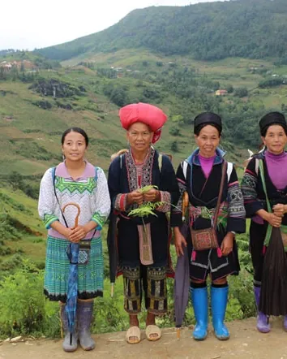
Circuit privé15jours Hanoi · Sapa · Bac Ha · Van Long … Des rizières en terrasse jusqu’au Mékong Découvrir Circuit privé15jours HCM Ville · My Tho · Cai Lay · Long Xuyen … Le Sud Vietnam et plage Phu Quoc Découvrir Circuit privé15jours Hanoi · Halong · Hue · Hoi An … Le dragon et sa tendresse Découvrir Circuit privé15jours Hanoi · Mai Chau · Hoa Lu · Halong … Vietnam du Nord et du Sud + Plage de Phu Quoc Découvrir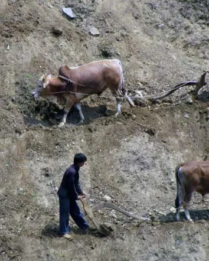
Circuit privé15jours Ha Noi · Nghia Lo · Mu Cang Chai · Sa Pa … Vietnam du Nord hors des sentiers battus Découvrir Petit groupe14jours
Ha Giang · Dong Van · Meo Vac · Quang Uyen …
Grand Tour du Nord Vietnam
Découvrir
Petit groupe14jours
Ha Giang · Dong Van · Meo Vac · Quang Uyen …
Grand Tour du Nord Vietnam
Découvrir
 Petit groupe14jours
Mai Chau · Pu Luong · Ninh Binh · Lan Ha …
Vietnam authentique
Découvrir
Circuit privé14jours
Hanoi · Mai Chau · Van Long · Halong …
Traversée du Vietnam
Découvrir
Petit groupe14jours
Mai Chau · Pu Luong · Ninh Binh · Lan Ha …
Vietnam authentique
Découvrir
Circuit privé14jours
Hanoi · Mai Chau · Van Long · Halong …
Traversée du Vietnam
Découvrir
 Petit groupe12jours
Ninh Binh · Lan Ha · Hue · Hoi An …
Essence du Vietnam
Découvrir
Petit groupe12jours
Ninh Binh · Lan Ha · Hue · Hoi An …
Essence du Vietnam
Découvrir
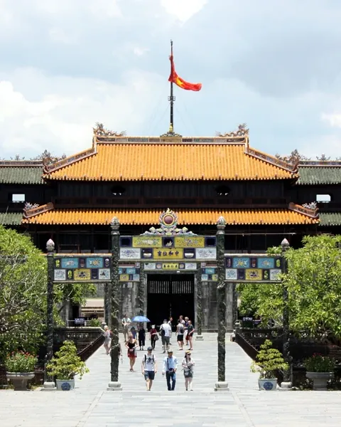
Circuit privé12jours Hanoi · Van Long · Halong · Hue … Splendeurs du Vietnam Découvrir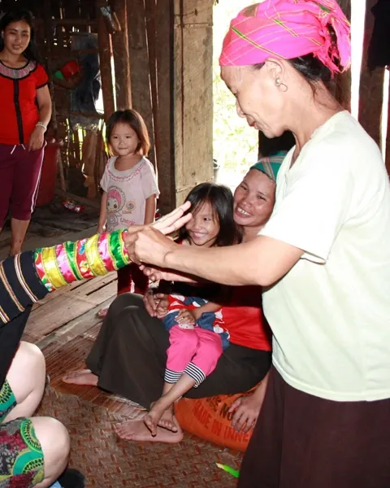
Circuit privé11jours Hanoi · Nghia Lo · Mu Cang Chai · Sapa … Immersion humaine du Haut du Tonkin Découvrir Circuit privé10jours Hanoi · Bac Ha · Ha Giang · Dong Van … Aventure du Nord-Est Découvrir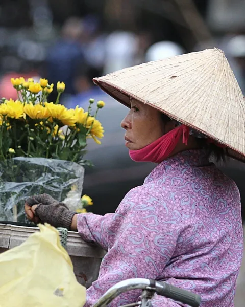
Circuit privé10jours Hanoi · Halong · Hue · Hoi An … Escapade au Vietnam Découvrir Petit groupe7jours
Ha Giang · Dong Van · Meo Vac · Quang Uyen …
Sentiers cachés du Nord-Est
Découvrir
Circuit privé7jours
Hanoi · Thac Ba · Bac Ha · Sapa …
Grande boucle du Nord-Ouest
Découvrir
Circuit privé7jours
Villages : Ta Phin · Suoi Thau · Ta Giang Phin · Nam Pung …
Sapa authentique
Découvrir
Circuit privé7jours
Hanoi · Ha Giang · Dong Van · Meo Vac …
Sur les routes des Pitons calcaires
Découvrir
Petit groupe7jours
Ha Giang · Dong Van · Meo Vac · Quang Uyen …
Sentiers cachés du Nord-Est
Découvrir
Circuit privé7jours
Hanoi · Thac Ba · Bac Ha · Sapa …
Grande boucle du Nord-Ouest
Découvrir
Circuit privé7jours
Villages : Ta Phin · Suoi Thau · Ta Giang Phin · Nam Pung …
Sapa authentique
Découvrir
Circuit privé7jours
Hanoi · Ha Giang · Dong Van · Meo Vac …
Sur les routes des Pitons calcaires
Découvrir
 Petit groupe6jours
Mai Chau · Pu Luong · Ninh Binh · Lan Ha
Meilleur du Nord Vietnam
Découvrir
Petit groupe6jours
Mai Chau · Pu Luong · Ninh Binh · Lan Ha
Meilleur du Nord Vietnam
Découvrir
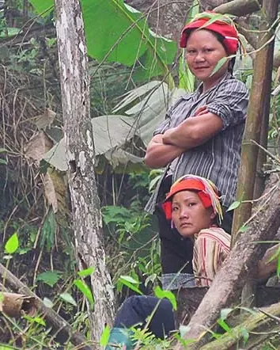
Circuit privé6jours Hanoi · Ha Giang · Dong Van · Meo Vac … Boucle du Nord-Est Découvrir Circuit privé6jours Villages : Ta Phin · Suoi Thau · Ta Giang Phin · Pa Cheo Sur les sentiers des Daos Rouges et des Hmong Noirs Découvrir Circuit privé6jours Villages : Nam Khanh · Ban Lien · Na Lo Trek à Bac Ha, le pays des Hmong bariolés Découvrir Circuit privé5jours Hang Kia · Cun Pheo · Van Mai · Poong Coong Randonnée aux pays des Thaïs Découvrir Circuit privé5jours Hanoi · Nghia Lo · Mu Cang Chai · Sapa … Rencontre des ethnies du Nord-Ouest Découvrir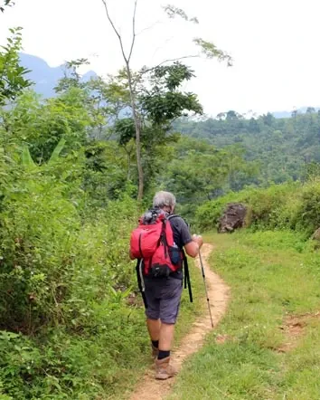
Circuit privé4jours Villages : Kho Muong · Uoi · Hin · Hieu Rencontres des Thais et Muong à Puluong Découvrir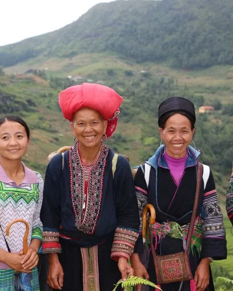
Circuit privé30jours Ha Noi · Nghia Lo · Mu Cang Chai · Sa Pa … Rencontre des Peuples indochinois Découvrir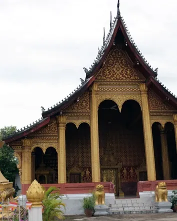
Circuit privé29jours Ha Noi · Mai Chau · Van Long · Ha Long … Rêveries indochinoises Découvrir Circuit privé19jours Ha Noi · Mai Chau · Van Long · Ha Long … Les Grands Joyaux du Vietnam - Cambodge Découvrir Circuit privé19jours Ha Noi · Mai Chau · Van Long · Hue … Vietnam authentique avec Extension à Angkor Découvrir Circuit privé15jours Houeisai · Luang Nam Tha · Muang Sing · Oudomxay … Tout le Laos Découvrir Circuit privé11jours Luang Prabang · Vang Vieng · Vientiane · Pakse … Laos du Nord au Sud Découvrir Circuit privé11jours Pakse · 4000 Iles · Vientiane · Vang Vieng … Laos du Sud au Nord Découvrir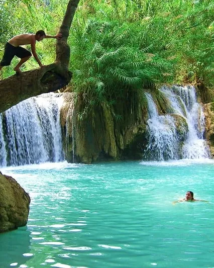
Circuit privé10jours Vientaine · Vang Vieng · Phonsavan · Luang Prabang Essentiel du Laos Découvrir Circuit privé8jours Luang PraBang · Xieng Khuang · Vang Vieng · Vientiane Laos : histoire & nature Découvrir Circuit privé7jours HoueiSay · Pakbeng · Nong Khaiw · Muang Ngoi … Escapade du Laos Découvrir Circuit privé7jours Dien Bien ( Vietnam) · Tay Trang · Oudomxay · Nong khaiw … Laos autrement Découvrir Circuit privé6jours Luang PraBang · Vang Vieng · Vientiane Laos passionnément Découvrir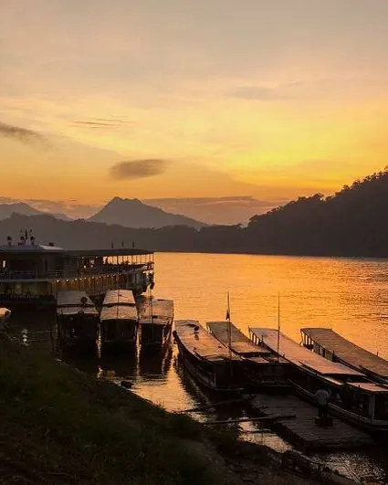
Circuit privé5jours Luang PraBang · Pakbeng · HoueiSay Immersion dans le nord du Laos Découvrir Circuit privé4jours Luang Prabang Splendeurs de Luang Prabang Découvrir Circuit privé23jours Phnom Penh · Kratie · Mondolkiri · Ratanakiri … Cambodge complet Découvrir Circuit privé18jours Siem Reap · Kampong Khleang · Kampong Thom · Kampong Chhnang … Cambodge : Flores et Faune Découvrir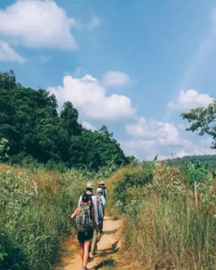
Circuit privé18jours Phnom Penh · Kampong Cham · Kratie · Ratanakiri … Voyage hors des sentiers battus au Cambodge Découvrir Circuit privé15jours Siem Reap · Battambang · Kampong Chhnang · Kampong Cham … Route des Photographes au Cambodge Découvrir Circuit privé14jours Siem Reap · Battambang · Phnom Penh · Kep Voyage en famille au Cambodge Découvrir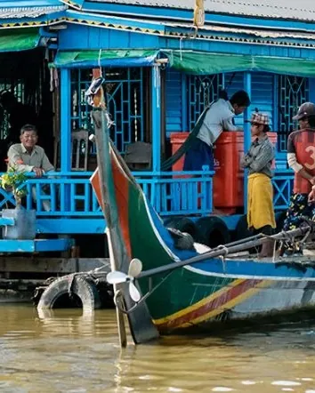
Circuit privé10jours Phnom Penh · Kampong Chhnang · Battambang · Siem Reap La vie sur le lac Tonlé Sap Découvrir Circuit privé9jours Phnom Penh · Battambang · Siem Reap Escapade au Cambodge Découvrir Circuit privé8jours Phnom Penh · Battambang · Siem Reap Grande Traversée du Cambodge Découvrir Circuit privé8jours Phnom Penh · Battambang · Siem Reap L’Essentiel du Cambodge Découvrir Circuit privé5jours Phnom Penh · Kampong Thom · Siem Reap Les Temples d’Angkor légendaires Découvrir Circuit privé4jours Siemriep Les temples d’Angkor Mystiques DécouvrirAucun voyage ne correspond à ces critères.
Avis voyageurs
Ils en parlent mieux que nous
« Ce que nous avons particulièrement apprécié, c’est leur véritable souci de nous faire vivre quelque chose d’exceptionnel. »
« Ce fut une découverte extraordinaire : paysages, guides connaissant bien votre pays et sachant nous faire partager ses traditions. »
« Le circuit que vous nous avez préparé était vraiment extraordinaire. »